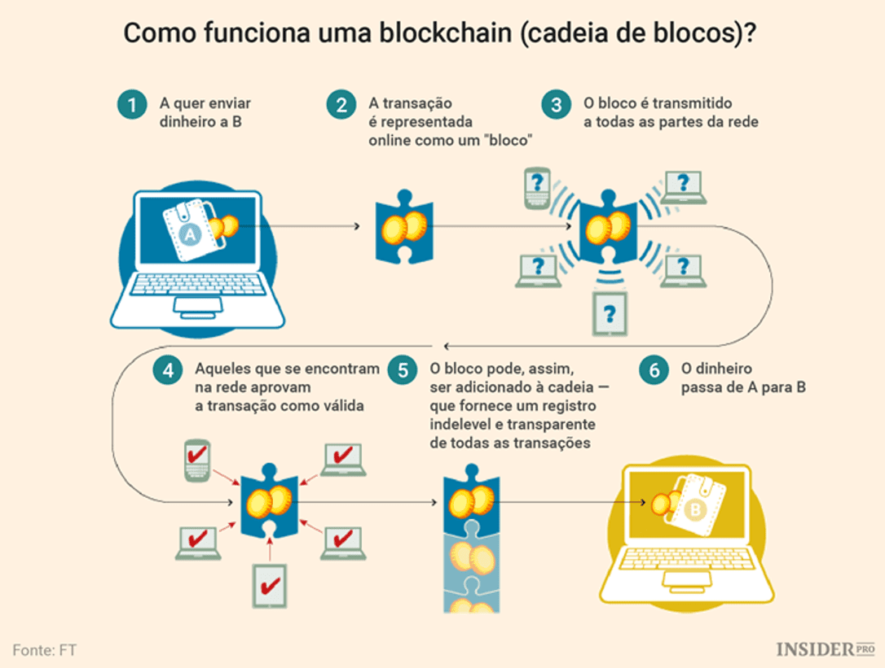

Blockchain

A tecnologia blockchain é um livro-razão compartilhado e imutável que facilita o processo de registro de transações e o rastreamento de ativos em uma rede.
A Blockchain armazena periodicamente informações de transações em lotes, chamadas blocos. Esses blocos recebem uma impressão digital chamada hash, que é um código matemático único e são interligados em um conjunto em ordem cronológica, formando uma linha contínua de blocos que parece uma corrente, é dali que vem o termo “chain” que é usado na palavra. Então BLOCK, CHAIN, corrente de blocos. Se alguém tentar fazer alguma mudança em um dos blocos passado, ele não é reescrito, mas pode ser enviada uma nova transação que será analisada pelos validadores e incluída em um novo bloco de informações. Praticamente qualquer item de valor pode ser rastreado e negociado em uma rede blockchain e essa rede ajuda a reduzir os riscos e os custos para todos os envolvidos na transação. Uma rede blockchain pode acompanhar pedidos, pagamentos, contas, produção e muito mais. Os membros da rede compartilham uma visualização única dos fatos, eles veem todos os detalhes de uma transação ponta a ponta.
Esse processo é descentralizado, totalmente digital, tem um consenso de rede e é totalmente criptografado. Isso garante mais confiança, eficiência e segurança pq cada transação é verificada ao mesmo tempo por vários computadores diferentes, sendo praticamente impossível adulterar dados por algum interesse criminoso. Isso abre caminho para novas formas de negociação de bens e serviços em uma economia digitalizada e interconectada.
